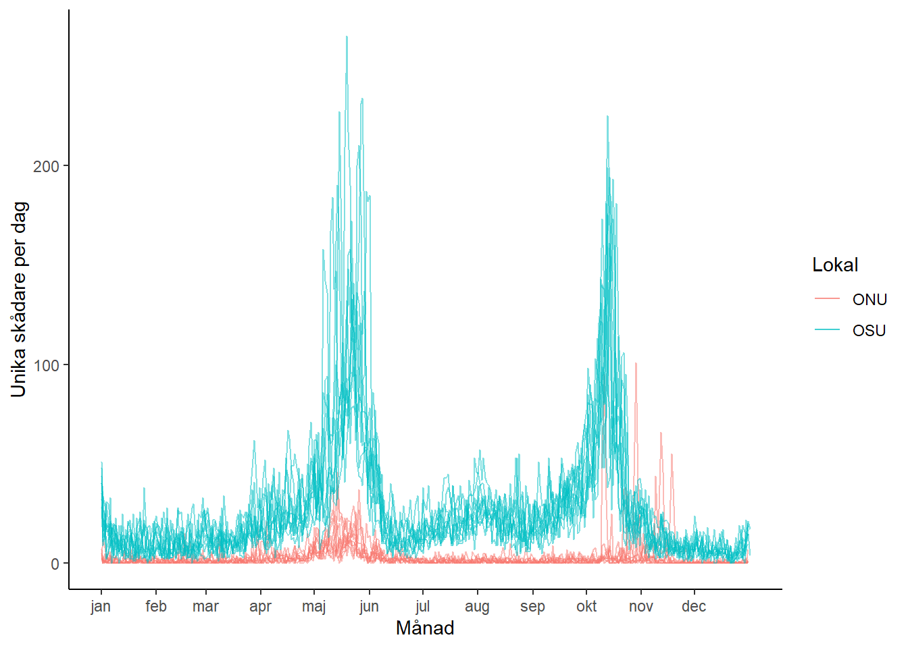
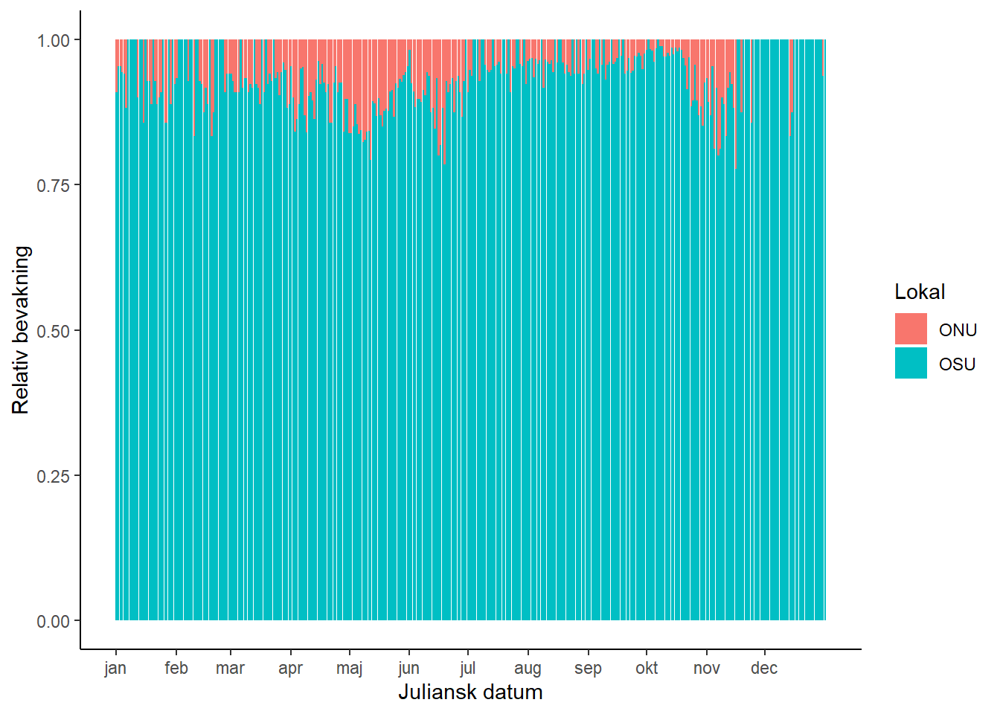

1 Om skådartrycket på uddarna
Vi har länge pratat om skillnaden i antalet människor på Ölands södra och norra udde. Ottenby har en lång tradition av fågelskådande och ringmärkning bakom sig. När många ögon och öron samlas på samma plats hittas ofta fler fåglar. Och när någon annan hittar en ovanlig fågel så är det inget stort företag att åka och titta på den. Det finns alltså mycket att vinna på att vara fler som skådar i ett begränsat område.
Skådartraditionen på norra udden är inte lika lång och inte lika cementerad i folkliga skådarsjälan. Från bron tar det nästan en och en halv gånger (45%) längre tid att åka till norra udden än södra udden (1 timme och 26 minuter mot 59 minuter). Dessutom kan det bli väldigt långt till närmsta drag, som med störst sannolikhet är i söder, om man inte lyckats skaka fram något själv. På norra får man således gräva sitt eget guld, om det blir något guld alls. Ändå finns numera ett gäng skådare som gärna, eller kanske hellre, skådar på norra udden.
Med anledning av den framgångsrika skörd på norra udden de senaste fem åren kan man ställa sig frågan hur mycket skådartrycket egentligen skiljer sig mellan uddarna. Den här sidan är ägnad till just det ämnet.

1.1 Data
I materialet finns än så länge bara data från och med 2015 till och med 2023. Data består av antalet unika observatörer (inklusive medobservatörer) per dag. Dvs., om en skådare rapporterat gräsand på Ölands södra udde med två medobservatörer bidrar den rapporten alltså med “tre skådardagar” till ÖSU:s räkning den dagen. Det skiljer alltså inte mellan en flitig rapportör som rapporterar fullständiga checklistor med 60-100 arter, och en som endast rapporterar den lite extra roliga arten; här är det besökstryck av unika skådare för varje given dag som gäller.
1.2 Besökstryck
Mellan 2015 och 2023 har 1603 unika skådare (baserad på unika namn; finns flera personer med samma namn så räknas de som en) rapporterat på norra udden medan 4065 unika skådare har rapporterat på södra udden. Det är alltså ungefär 2.5 gånger fler unika besökare som rapporterat på södra udden jämfört med den norra.
Om man istället tittar på antalet skådardagar så blir det större skillnad: ÖNU har samlat på sig 8642 skådardagar mellan 2015 och 2023, medan ÖSU har samlat på sig ungefär en tiopotens fler, nämligen 87561 skådardagar. Vi kan testa att slå ut det här på säsong.

Om man delar antalet skådar dagar på norra udden med skådardagar på södra udden kan man få ut en “relativ bevakning”.
